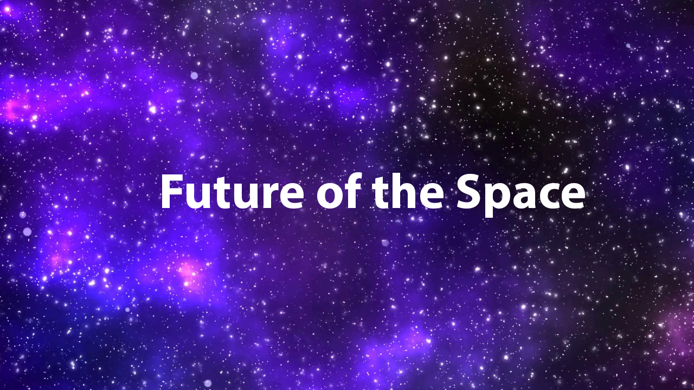

|  | |
|---|---|
Future of NASA video
NASA’s future will continue to be a story of human exploration, technology, and science. We will go back to the Moon to learn more about what it will take to support human exploration to Mars and beyond. We will continue to nurture the development of a vibrant low-Earth orbit economy that builds on the work done to date by the International Space Station. NASA engineers will develop new technologies to improve air transport at home and meet the challenges of advanced space exploration.Our scientists will work to increase an understanding of our planet and our place in the universe. Unlike the way the space program started, NASA will not be racing a competitor. Rather, we will build upon the community of industrial, international, and academic partnerships forged for the space station. NASA will continue to be a global leader in scientific discovery, fostering opportunities to turn new knowledge into things that improve life here on Earth. In the half-century since people visited the Moon, NASA has continued to push the boundaries of knowledge to deliver on the promise of American ingenuity and leadership in space. And NASA will continue that work by moving forward to the Moon with astronauts landing on the lunar South Pole by 2024. NASA is implementing the President’s Space Policy Directive-1 to “lead an innovative and sustainable program of exploration with commercial and international partners to enable human expansion across the solar system.” NASA stands on the verge of commercializing low-Earth orbit. These experiences and partnerships will enable NASA to go back to the Moon in 2024. With 2020 more than half way through, NASA is gearing up for a busy rest of the year and 2021. Following the recent successful launch of a Mars rover and safely bringing home astronauts from low-Earth orbit aboard a new commercial spacecraft, NASA is looking forward to more exploration firsts now through 2021. The agency is sending the first woman and next man to the Moon in 2024, establishing sustainable exploration by the end of the decade as part of the Artemis program while getting ready for human exploration of Mars. Among the activities the agency has for the rest of 2020, NASA’s SpaceX Crew-1 mission is targeted for launch from the agency’s Kennedy Space Center in Florida to the International Space Station this fall, following certification of the system by NASA’s Commercial Crew Program. The mission will be the first in a series of regular, rotational flights with astronauts to the orbital laboratory as it marks 20 years of continuous human presence aboard the station Nov. 2. Artist’s concept of NASA’s X-57 ‘Maxwell’ aircraft. The X-57 will be the first all-electric X-plane and will be flown to demonstrate the benefits that electric propulsion may yield for the future of aviation. The goal of the X-57 is to achieve a 500-percent increase in high-speed cruise efficiency, zero in-flight carbon emissions, and flight that is much quieter for the community on the ground.
|
|